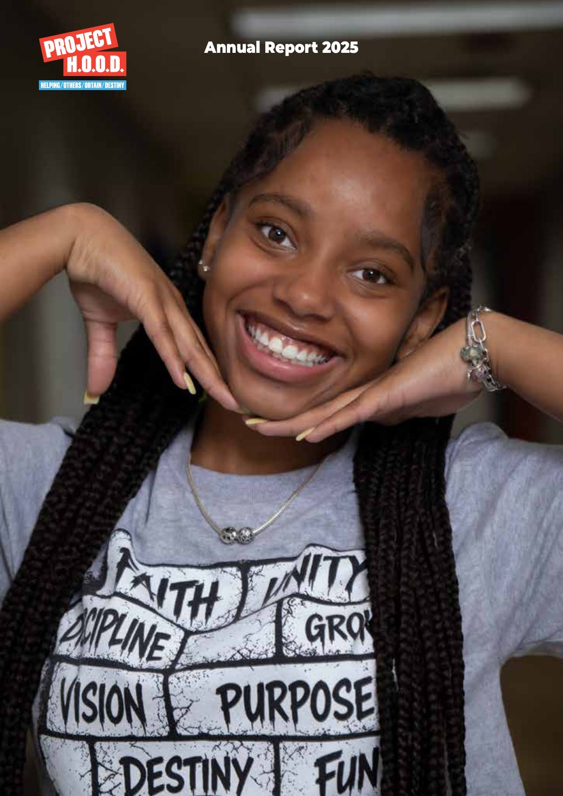

A year of restoration and hope.
Mentorship, training, and community for the residents of Woodlawn and Englewood. This is what your support built in 2025 — the lives changed, the doors opened, and the block that keeps showing up.
Flip through all 13 pages.
Tap any page to zoom in. Use the arrows — or your keyboard’s left/right keys — to turn the pages.

The year in numbers.
Dear friends and supporters,
As I reflect on 2025, I am filled with deep gratitude — for your faith, your generosity, and your willingness to stand with us as we continue building something that is transforming lives every single day on the South Side of Chicago.
One of the most visible signs of that progress is the continued development of the Leadership & Economic Opportunity Center. With each phase of construction, we are getting closer to opening the doors to a space that will serve as a hub for education, workforce training, entrepreneurship, and opportunity for generations to come.
On a personal level, this year has been a journey of endurance and faith. While a medical setback and necessary surgery prevented me from continuing the Walk Across America as planned, the mission itself has never stopped. What began as my walk has become something much bigger — a movement of people across the country choosing to stand for hope, opportunity, and unity. I invite you to #WalkWithUs.
Thank you for walking with us. Thank you for believing. And thank you for helping us build hope where it is needed most.
Pastor Corey B. Brooks
Founder & CEO

One walk became a movement.
In 2025, Pastor Corey Brooks took a bold step of faith — walking across America to raise awareness and support for Project H.O.O.D. When a foot injury required surgery and forced him to pause, the mission didn’t stop. It evolved into Walk With Us, a nationwide movement inviting supporters to carry the vision forward in their own communities.
These funds fuel two critical goals: completing the Leadership & Economic Opportunity Center debt-free, and building a sustainable Project H.O.O.D. endowment.
Where the work landed in 2025.
Violence Prevention · Entrepreneurship & Job Readiness · Health & Wellness · Youth Programming · Re-Entry Services.
91 mediations · 7,000+ families served
Our 12-member Violence Interruption Team works daily to de-escalate conflict and build trust. In 2025 they hosted 88 community events and launched the FLIP Housing Initiative, providing stipends to 7 participants to support housing stability.
Success story: Facing unemployment and housing instability, Demetrius Pouncy Jr. earned OSHA 10, Forklift, Flagger, and Construction Safety certifications, enrolled in a GED program, and secured a paid role with Windy City Harvest Corps — and now encourages other young people to choose a different path.
34 graduates · 1,048 job seekers connected
Construction cohorts served 36 participants with 34 graduates. Six job fairs brought together 41+ employers, and we supported 23 entrepreneurs in forming 21 new LLCs — building a foundation for community wealth.
Success story: Two graduates were accepted into the Roofers Union and now work with M. Cannon Roofing — contributing directly to the construction of Project H.O.O.D.’s new LEO Center. Full circle.
2M+ lbs of food · 6,500+ families
Our “Everybody Eats” drives anchor this work, while the South Side Free Clinic ran 14 clinic days serving 55 patients, and 700+ attended senior & wellness events including Fall Prevention and the Health Care Hiring Job Fair.
Success story: Seeing rising rates of high blood pressure and diabetes, SSFC launched the HEART Program — free home blood-pressure monitors, training, physician consultations, and referrals — helping neighbors take control of their health.
200 at summer camp · 228 after-school
Free “Secure The Bag” Summer Camp reached 200 youth, with 228 enrolled in after-school programming. Sixteen youth traveled on an international mission trip to Zimbabwe, and our Teen Worker Program delivered hands-on job experience.
Success story: Camp participant Marcus Easley stood out during our Aviation Nation partnership. His curiosity opened the door to continue exploring aviation beyond the summer — a camp activity that became a potential career pathway.
110+ supported · 46 through expungement clinics
We walk alongside returning citizens through every stage of reentry — expungement support, job readiness, housing connections, and life skills. In 2025: 25 participants in the reentry cohort, 10 job placements & referrals, 300+ community service hours, and a growing network of 11 partner organizations.
Success story: A 25-year-old mother and survivor of domestic violence entered the Rebirth Project seeking a fresh start. After completing the cohort and life-skills training, she secured stable housing and employment, purchased a vehicle, and now takes her son to school each day — not just stable, but thriving.
The building goes up.
What began as an idea has taken shape as a transformative space for education, workforce development, entrepreneurship, and community connection on Chicago’s South Side. Construction is about 70% complete.
- Structural construction fully completed — steel framework and exterior buildout
- Roofing & building enclosure completed, securing the full structure
- Major interior buildout underway — classrooms, workforce training spaces, and common areas
- Electrical, plumbing & HVAC systems significantly advanced
- Gymnasium and recreational spaces progressing toward completion
- Second Chance Hub and entrepreneurship spaces beginning interior development
- Site work and surrounding infrastructure continuing to take shape
Disciplined stewardship.
Project H.O.O.D. closed the year with $8.9M in total income and a net surplus of $348,846 — reflecting continued growth and disciplined financial stewardship. Nearly 80 cents of every dollar spent went directly toward mission delivery. Figures below reflect programming operations and do not include construction costs of the LEO Center.
Where the income came from
- 63% — Contributions & special events (individual, corporate, online, gifts-in-kind, fundraising)
- 31% — Grants (foundation, government, restricted)
- 7% — Violence prevention grant (dedicated safety & prevention programming)
How it was spent
- 49% — Programs & direct impact
- 31% — Personnel
- 7% — Marketing & advertising
- 4% — Annual gala
- 3% — Travel & meetings · 3% other · 2% outreach & meals
- 1% — Occupancy
For full audited financials and 990s, see our About page.
Board & staff.
Board of Directors
Pastor Corey Brooks (President & Founder), Steve Bozeman (Secretary), Isaac Greene (Treasurer), Mike Paulsen, and Patrick Milligan Sr.
Staff leadership
Desmond “Dez” Marshall (Executive Director), Brian Alexander (COO), Jeff “Rafi” Boyd (Re-Entry Director), TaWanna Cotton (Workforce & Resource Director), Maurita Gholston (Programming Manager), Maia Goins (Director of Operations), James Highsmith (Non-Violence Director), Kristen Kell (Communications), Shari Lewis (Grants & Data), LaDonna Peppers (Program Success), and Arenda Troutman (Government & Community Relations).
Advisory Board
Chuck Adler · Nathan Arant · Larry Berlin · Rick Doering · Richard Edelman · Tom Gallagher · Pastor Keith Gordon · Bill Gorsline · Nick Gowen · Kanye Grau · Jim Hayes · Susan Heymann · Rashod Johnson · Ta’Rhonda Jones · Ryan Kunkel · Dan Madura · Talia Maschiach · Patrick Milligan · Leslie Munger · John Munger · Bill O’Kane · Jim Oberweis · Marty Ozinga · Mike Paulsen · Jim Purcell · Dr. John Radford · John Reaves · Sean Seay · David Selbst · Dr. Eric Wallace · John Williams · Rob Zappia
Read it all — then help us make 2026 bigger.
The full report has every story, stat, and photo from the year. Your gift keeps this work on the block.